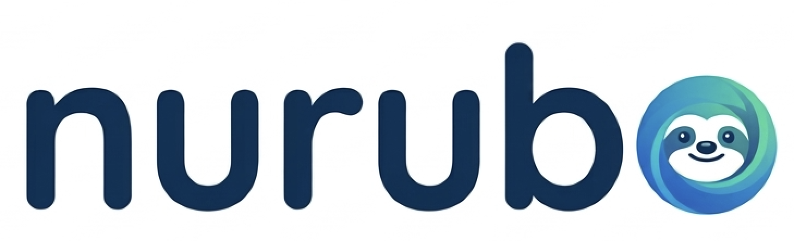

SMART & RELAXED
梅澤 雅弘
MASAHIRO UMEZAWA
AIと暮らす62歳｜NuruboAI
- Web
- nuruboai.com
登録名は「梅澤 雅弘」、会社名は「nurubo」です。
開いた画面で登録の操作をしてください。
iPhoneでは、開いたあとに2つの操作
- 名刺の下にある「新規連絡先を作成」を押す。
- 内容を確認して「完了」を押す。
上のチェック（✓）は、確認画面を閉じるだけです。
登録するときは、下の「新規連絡先を作成」へ進んでください。
デジタル名刺

SMART & RELAXED
MASAHIRO UMEZAWA
AIと暮らす62歳｜NuruboAI
登録名は「梅澤 雅弘」、会社名は「nurubo」です。
開いた画面で登録の操作をしてください。
上のチェック（✓）は、確認画面を閉じるだけです。
登録するときは、下の「新規連絡先を作成」へ進んでください。
連絡先は、使いたい方が使ってください。
いらなければ消していただいて大丈夫です。